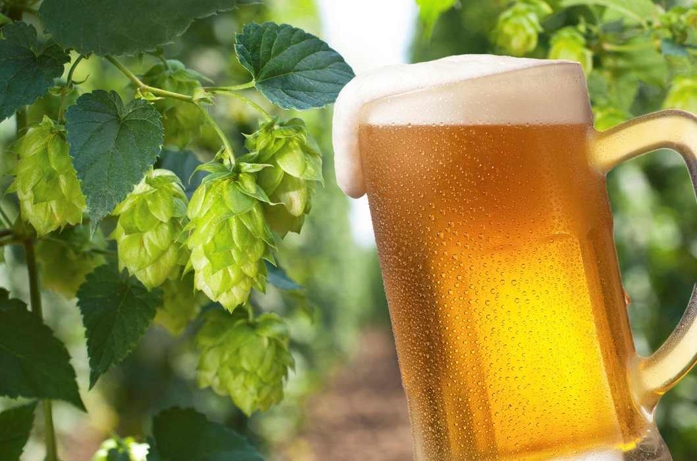

Session IPA
IPA de verãoHoje o termo Session é fortemente incorporado pelas cervejarias norte-americanas, que o utilizam para caracterizar versões mais suaves de alguns estilos, como IPA e Pale Ale, entre outras. Nossa Session IPA, é uma American IPA que saiu um pouco do estilo, ficando mais leve e combinando muito com o calor brasileiro, mas sem perder aquele amargor e aromas de lúpulo bem presentes.
Com blend dos lúpulos americanos mais populares conseguimos aportar um aroma floral e cítrico bem característico, um sabor condimentado e de frutas tropicais, e um amargor de 36 IBUs bem predominante mas sem aquele "hash" ou amargor extremo, conseguindo uma alta drinkability, ou seja, para deixá-la mais fácil de beber. Foi utilizado 3 maltes dando uma aparência dourado intenso, espuma com boa persistência, sensação na boca de corpo médio e uma textura macia bem cremosa.
“A cerveja é a prova viva de que Deus nos ama e nos quer ver felizes.” – Benjamin Franklin
Um pouco de história!
Voltando no tempo, na época em que a Inglaterra era a grande potência e a Índia uma colônia britânica, muitos britânicos passaram a se instalar na Índia. Eles precisavam ser abastecidos pelos produtos britânicos para consumo, comércio e outros. Entre os produtos que eram trazidos da Inglaterra estava, claro, a cerveja.
Porém, notou-se que as cervejas tinham seu sabor alterado devido a grande distância percorrida pelos navios que partiam com destino a Índia e, quando chegavam lá, estavam estragadas, o que certamente não agravada ninguém.
Então, os cervejeiros da época decidiram acrescentar mais malte e lúpulo à receita original, buscando fornecer maior resistência à bebida. Deu certo, principalmente pelo lúpulo que tem propriedades antibióticas, funcionando muito bem como conservante natural, evitando a contaminação por bactérias. Mas em contrapartida a cerveja ficou com forte amargor e teor alcoólico elevado. Foi este sabor intenso que ganhou o público. Tempos depois começaram a surgir variações das IPAs, que existem até hoje.
TELEBIER
Entregamos somente para a região de Torres e suas cercanias.
Click nos links abaixo e fale diretamente pelo whatsapp com Diego ou Cristiano, Obrigado!
“Salve o planeta. Afinal, ele é o único que tem cerveja.” – Charlie Harper